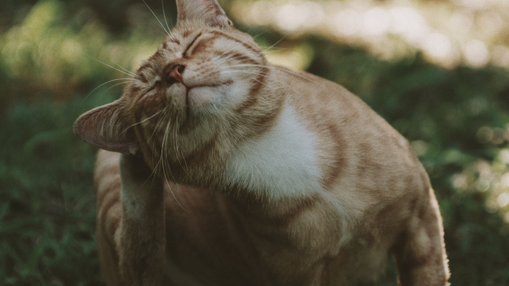
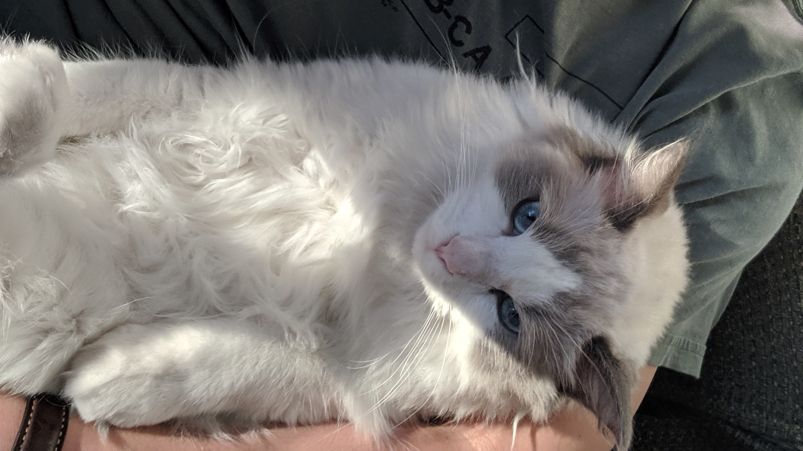

"For judgement is without mercy to one who has who has shown no mercy. Mercy triumphs over judgement."
About Me
I’m a UX designer, studying at the University of Washington.
UX is my way of helping those in need. I’ve always been focused on two things, people and technology. UX brings together these two passions by focusing first on how to meet the needs of users through empathy, and second how to utilize technology to meet those needs.

Five of My Favorite Things
-
Favorite animal:
Monkey -
Favorite food:
Fried Chicken -
Favorite TV show:
Demon Slayer -
Favorite hobby:
Cycling -
Favorite car:
Honda Odyssey
A picture that represents when I'm happy

A picture that represents when I'm sad
